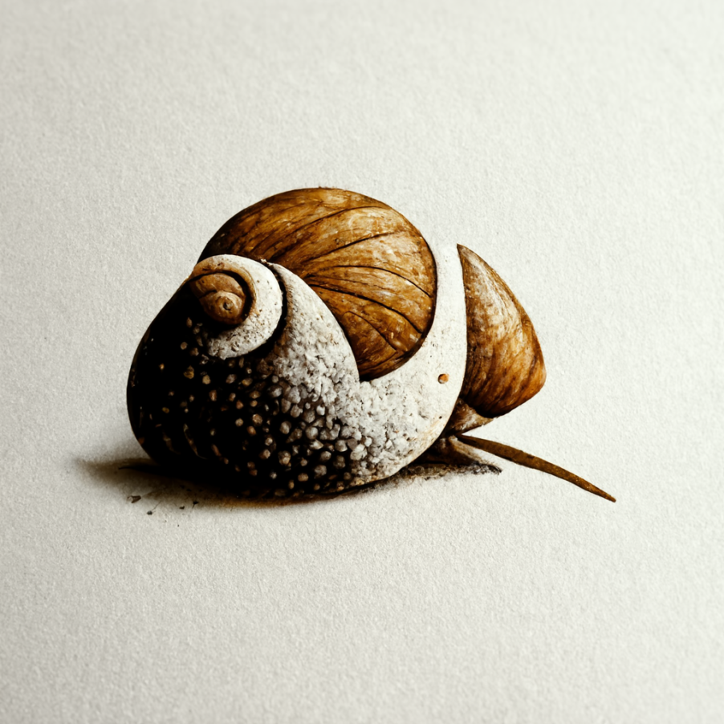

Dagor documentation

0.1.0
Dagor Engine Render
Engine Libraries Docs
Dagor Engine Libraries
Quirrel Modules Docs
Qdox User Guide
Dagor documentation
Engine Libraries Docs
View page source
Engine Libraries Docs
Contents:
Dagor Engine Libraries
Image
Image Rasterization
PictureManager
Picture Sources
Picture Atlases